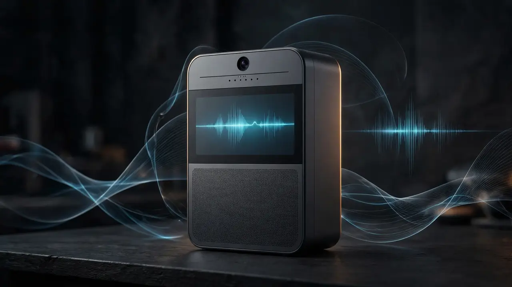

Ex-Plaud exec raises $26M for Ambi, an AI that listens to you all day — disclosure is on you
Former Plaud executive Peter Mo's startup Mistlabs announced on Monday that it has raised $26 million to launch Ambi, an AI assistant that listens to you continuously and acts on what it hears in real time — with the job of telling everyone around you falling to the user.
Ambi is built by Mistlabs, the San Francisco startup co-founded by Peter Mo, who was previously an executive at the AI-recorder company Plaud. The company said on Monday that it has raised $26 million across multiple funding rounds, led by Luminous Ventures — which has backed companies like Meituan and Unitree Robotics — and original design manufacturer Huaqin.
The launch comes with apps for iPhones, Macs, and Apple Watch shipping today. They work like meeting notetakers, except users can choose to keep them listening so the app captures context throughout the day — not just during a scheduled call.
Act during the meeting, not after it
Today's meeting notetaking companies have been busy automating what happens after the call — summaries, action items, follow-ups piped into other software. Ambi wants to move that work into the meeting itself.
The promise is an AI agent that proactively surfaces suggestions or relevant knowledge while you are still in the conversation, drawing on your calendar, meetings, knowledge base, and web data. Start a task on one device, continue it on another — the assistant is supposed to follow the person across devices rather than live inside a single app window.
"The way we interact with intelligence is limited. Often the intelligence is trapped on the screen, and if you use hardware like Plaud, you need to wait for recording to transfer to the phone, upload to the cloud, and get intelligence after processing. That's why we are building Ambi to use AI anytime and anywhere," Mo told TechCrunch.

A desktop that watches, and hardware that listens
The ambition extends past the phone. An upcoming desktop app will be able to look at the work users do and store the important parts in memory to make more personalised suggestions — territory already being explored by apps like Littlebird and Minimi, which TechCrunch names as points of comparison.
Beyond software, Mistlabs is planning its own hardware device: a unit with a screen, a speaker, a camera, and microphones designed to capture context and display information. It's a hardware roadmap for a company that today exists as three apps — but the $26M raise is funding exactly that kind of expansion. The startup currently has over 50 staff across offices in San Francisco, Beijing, Shanghai, and Shenzhen, and is hiring for its go-to-market function and AI engineers to work on speech-recognition models.
The disclosure problem — off by default, but on you
This is the part that will decide whether Ambi is a product people love or one regulators love to investigate. Ambi's launch lands amid growing concern about AI devices that don't clearly signal when they're capturing people around the user — and it's not clear whether Ambi's apps or its future device will carry indicators that alert third parties they're being recorded, if the user doesn't disclose it themselves.
Mo says ambient data capture can be switched off at any time and is off by default. The company says it doesn't store any recordings and encrypts the data — though it didn't specify what kind of encryption. Even so, the onus of telling the room is on the user. Mo is unusually candid about it:
"We have to inform our users that they have to tell others about ambient capture. We, as an industry, haven't solved this problem [of disclosure]. We have tried to put the information about disclosure in every place possible, but if users try to hide the capture, we can't just solve the problem."
The caution isn't theoretical. Some meeting notetakers have already been sued because their tech recorded people's conversations and data without their consent, and the recent release of Apple's own continuously-transcribing Audio Intelligence feature has raised fresh privacy concerns. TechCrunch frames it bluntly: startups are building always-listening apps undeterred, armed with the belief that the market for personalised assistance is big enough to swallow the privacy concerns.
Ambi's pitch is that listening is the price of genuinely useful assistance. Whether users — and the people around them — agree will determine whether this $26 million bet on ambient AI pays off.
Sources: TechCrunch, "Former Plaud exec raises $26M for AI app that listens to you in the background," Oct 12, 2026; Technopolis, Oct 12, 2026; Ambi.